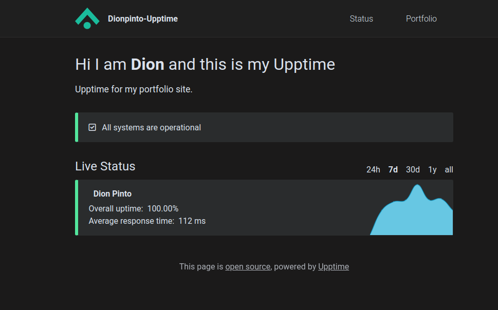

Upptime
Maintain Upptime for your site
14th June 2022 ~ Dion Pinto
Introduction
After the creation of any web application the logical next step is to put the site into production. For the creation of my personal portfolio website I utilised SvelteKit and hosted it on github pages (gh-pages), however , it is essential to know if your site has ever gone down or crashed, you can utilise paid tools to check for the uptime of your production site or you can utilise a free and open source alternative called Upptime. (Upptime Docs)
Uptime utilises github actions as an uptime monitor, with github issues used as incident reports and github pages for the status page.
You can find the my Upptime git repository here (Repository)
You can also find my Upptime status page here (Status Page)
Initialization
All you need to do is is follow the getting started page on the upptime documentation (Getting Started)
If you follow the steps mentioned correctly, you should have set up an upptime monitor by now.
Configure Status Page
You can now configure how you want upptime to function. The documentation is pretty good which you can utilize for the core functionality.(Configure)
One glaring issue however was the status does not have a dark theme by default. I did try the method suggested by this commit(Theming). However, this did not give me satisfactory results.
I utilized custom css for a true dark theme in the .upptimerc.yml file.
css: "
:root { --body-background-color: #1b1a1a; --body-text-color: #dce2ec;
--card-background-color: #2a2c2d;
--nav-background-color: #1f1f1f;
--nav-border-bottom-color: #2d2c2c;
--nav-current-border-bottom-color: #d61212;
--card-border-color: #2a2c2d;
--down-border-left-color: #ff7676;
--down-background-color: #6b1020;
--degraded-border-left-color: #ffc36d;
--up-border-left-color: #53e69d;
--tag-color: #002b29;
--tag-up-background-color: #53e69d;
--tag-down-background-color: #ff7676;
--tag-degraded-background-color: #ffc36d;
--change-background-color: #ffc36d;
--error-button-border-color: #1a46ad;
--error-button-background-color: #3867d6;
--error-button-color: #dce2ec;
--submit-button-border-color: #1a46ad;
--submit-button-background-color: #3867d6;
--submit-button-color: #dce2ec;
--graph-opacity: 1;
--graph-filter: hue-rotate(34deg) saturate(164%) brightness(89%);
}
article.down {
border-left: 0.4rem solid;
}
article.degraded {
border-left: 0.4rem solid;
}
article.up {
border-left: 0.4rem solid;
}
.chartjs-render-monitor {
filter: hue-rotate(34deg) saturate(164%) brightness(89%);
}
"
The results can be seen here.
